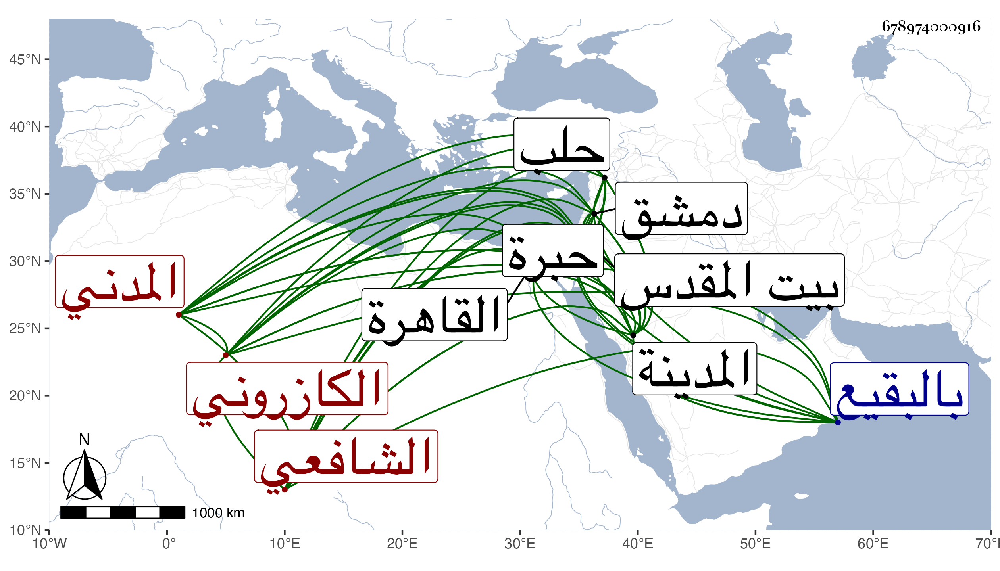

0902Sakhawi.DawLamic.ITO20230111-ara1.EIS1600.678974000916
Biography ID: 678974000916
115
محمد بن محمد بن أحمد بن محمد بن محمود بن إبراهيم بن أحمد بن روزبة ناصر الدين أبو الفرج بن الجمال أبي عبد الله بن الصفي الكازروني ثم المدني الشافعي ويعرف بابن الكازروني . ولد في ليلة الثلاثاء سابع ربيع الأول سنة خمس وتسعين وسبعمائة بالمدينة ونشأ بها فحفظ القرآن وتلا به لعاصم وأبي عمرو علي الزين بن عياش والحاوي والمنهاج الأصلي وألفية ابن ملك ، وعرض على جماعة وأخذ في الفقه عن الزين المراغي وانتفع بأبيه فيه وفي غيره وقرأ عليه البخاري وغيره وكذا أخذ بحثا عن النجم السكاكيني الحاوي والألفية والتلخيص والأصول وأذن له في سنة إحدى وثلاثين بالإفتاء والتدريس ووصفه بجوهرة العلماء ودرة الفضلاء لسان العرب وترجمان الأدب الأفضل الأمجد ، وأخذ أيضا النحو والأصول عن أبي عبد الله الوانوغي وارتحل إلى القاهرة مرارا فأخذ أولا عن ابن الكويك وأجاز له ثم في سنة ثلاث وأربعين فسمع علي الزين الزركشي بعض صحيح مسلم وقرأ في سنة خمس وأربعين على شيخنا الخصال المكفرة من تصانيفه وغيرها وكان قد أحضر في المدينة النبوية سنة ثمان وتسعين على أبي إسحاق إبراهيم بن علي بن فرحون الشفا والموطأ ليحيى ابن يحيى وفي التي تليها على ابن صديق البخاري بفواتات يسيرة وسمع علي الزين المراغي الأربعين لأبي سعد النيسابوري والأربعين التي خرجها شيخنا له من مروياته وكذا سمع على الرضي المطري والد المحب وسليمان السقائم سمع على أبي الفتح المراغي وغيره ، وأجاز له الزين العراقي ، ودخل دمشق وحضر بها دروس الشهاب الغزي والشمس الكفيري وابن قاضي شهبة ، وزار القدس والخليل ودخل حلب فأجاز له حافظها البرهان ، وحدث ودرس أخذ عنه الفضلاء وممن قرأ علبه البخاري ابنه عبد السلام الأول وناصر الدين محمد بن أبي الفرج المراغي ومسدد ، أجاز لي . ومات في ذي الحجة سنة سبع وستين ودفن عند والده بالبقيع رحمه الله وإيانا .
